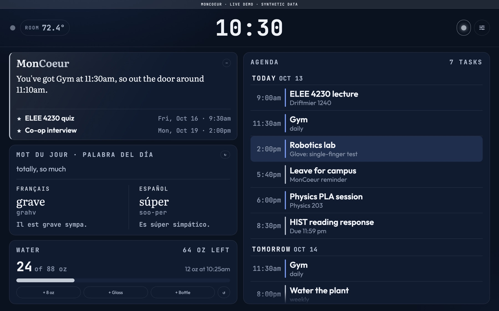
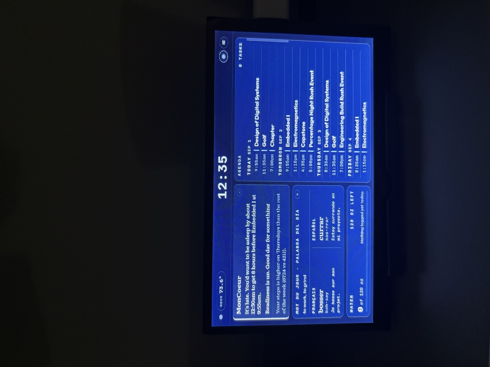

MonCoeur
A Raspberry Pi that runs my room: lighting, display power, sleep tracking, and an always-on dashboard. I called it JARVIS when I started it in 2025 and renamed it MonCoeur in the rebuild. It's been running for over a year and it's the project I keep coming back to. The current version also plans my homework, wakes me up and reads plain sentences.
Problem
I wanted my room to react on its own instead of waiting for me to open an app.
A smart bulb with an app still needs a person tapping a phone. I wanted to see if the room could handle some of that itself: if it can read its own temperature, my calendar, and the weather, it should be able to make small decisions without me.
There was a second reason. I get migraines, and I could never tell what set them off. Logging sleep, hydration, exercise and room temperature in one place was the only way I was going to find the pattern.
Plan
Sensing
A temperature and humidity sensor reads the room over I²C. One motion sensor ended up doing three jobs: turning lights on when I walk in at night, logging motion while I'm away, and treating forty minutes of stillness as me falling asleep. Calendar and weather APIs fill in what the room can't sense.
Knowing if the room is empty
Motion on its own can't tell me apart from anyone else, so I needed a way for the room to know whether I'm home.
My first thought was the Oura ring I already wear. That doesn't work: the ring pairs with a single phone and broadcasts nothing the Pi can pick up. Bluetooth was the next plan, and it ran into a constraint I had built myself. The Flic button's daemon claims the Pi's Bluetooth radio exclusively, so nothing else can scan while it is running. Presence looks for my phone on the network instead, with a ping and the ARP table.
In range means I'm home. Gone for a while means the room is empty and should arm itself, and motion while it's armed is someone who isn't me. That turns the motion sensor I already have into a quiet security system without adding hardware. The demo below shows the home, away and entry states.
Acting
Lighting runs over the local network directly to the bulbs, no vendor cloud involved. For the monitor I used DDC/CI, the display's own control channel, instead of the usual smart plug. A plug can only cut power; talking to the display directly let me actually dim it gradually, which is what I wanted for mornings.
Talking to it
There are four ways in: the wall display, a Bluetooth button on the desk, an iPhone shortcut, and speech. The speech side runs entirely on the Pi, the wake word and the recognition and the voice that answers, so asking what the temperature is never leaves the house. Nothing here needs someone else's cloud to keep working.
Staying up
Everything runs as a systemd service that starts on boot and restarts if it crashes. Getting that right is a big part of why it's still running a year later.
Trials & Errors
The first version worked, and I still stopped using it within a week.
I built the first version over a spring break as a web page on the local network. It worked fine, but opening a browser to check my own room was annoying, and I couldn't read the layout from across the room. Nothing was broken. I had just built the wrong thing.
The rebuild became an always-on display with one rule: I should be able to read everything from my bed. That rule shaped the whole interface, and it's also why I needed control over the display's brightness, which led me to DDC/CI.
My favorite part is the summary panel. The calendar shows events, the sensors show readings, the weather shows weather, but one panel pulls it all together into a short summary of what I actually need to know. That's the part that makes it feel like a system instead of a wall of numbers.
Version three
Everything added this year had to pass one test: does it give me one less thing to keep track of.

Pages
Version two was one screen. Version three is five pages on the phone and laptop. Today is what the wall shows: the next thing, the day's blocks, water and the briefing. Plan lays out homework and study time for the weeks ahead. Food plans the week's dinners and keeps the grocery list. Gym logs each set next to what I lifted last time. Shop shows sales on the specific things I'm waiting to buy. The wall still shows only Today, since it has no touchscreen.
It plans my homework
Due dates come in from the course site on their own. The Pi plans every assignment and study block 37 days ahead around my classes and calendar, aims to finish two days before anything is due, and learns how long each kind of assignment actually takes me from what I log. Exams get study time starting a week out. Once I start a block it stays put, and nothing gets pulled earlier during the day, so the plan doesn't shift under me while I'm working through it.
It wakes me up
I sleep through phone alarms, so MonCoeur sets its own. It finds my first real commitment of the day in the calendar and my task list, a class, an exam or an interview, and wakes me an hour before it, never later than 10am. Before it rings it checks that I'm actually home, and when it isn't sure, it rings anyway. Fifteen minutes out the lamps fade up from a warm 2200K to 3000K, then a tone plays through a USB speaker, starting quiet and getting louder, every five minutes until the motion sensor sees me up. It also learns how long I take to get out of bed and adds that on class days.
It reads what I type
I can type a sentence the way I would to a person. A rule-based reader handles the common ones. For anything it can't read, a small language model running on the Pi, Qwen2.5 3B through llama.cpp, turns the sentence into the same commands the buttons use. Nothing it produces is trusted as-is: the output is forced into a fixed format, every item and date is checked against my real list, and the change is read back to me in plain words and waits for a yes. The model runs on the Pi itself, with no AI service behind it, and if it's down everything behaves exactly as it did before it was added.
Fewer texts
The reminders added up to 96 texts in two weeks, and I stopped reading them. Now the evening is one conversation at 9pm: it asks what I got done, and each answer brings the next question. It also watches public job boards for entry-level electrical roles and sends the day's matches in one text. No feature gets to text me once per item.
Staying up, again
Every night the Pi copies its data and setup to a private repository, with the secrets encrypted to a key only I can unlock, so a dead SD card can be restored instead of rebuilt. I haven't tested a full restore onto a spare card yet. It also texts me if it's running hot, short on power, low on memory or nearly out of space.
Where it broke
- The whole Pi froze. Training the new wake word read a 16 GB dataset next to the 2 GB language model, the Pi ran out of memory, and everything stopped, SSH included, until I pulled the power. Raspberry Pi OS ships with the kernel's memory controller turned off, so every memory limit I had set was doing nothing. It's on now: the dashboard and the alarm have memory reserved for them, heavy jobs run through a guard that stops them when the Pi gets tight, and a 15-second hardware watchdog reboots it if it ever hangs again.
- A restart rang the alarm again. The alarm kept "already stopped" in memory, so a deploy after I'd turned it off started it over, and one morning it rang five times in two minutes. It reads the stop from its own log now.
- The lamps came on purple. The fade first sent a pale orange RGB color, which these bulbs render as purple. It uses white color temperature now.
- The first alarm was at full volume. It starts at 15% now and climbs.
Result
Running since early 2025.
